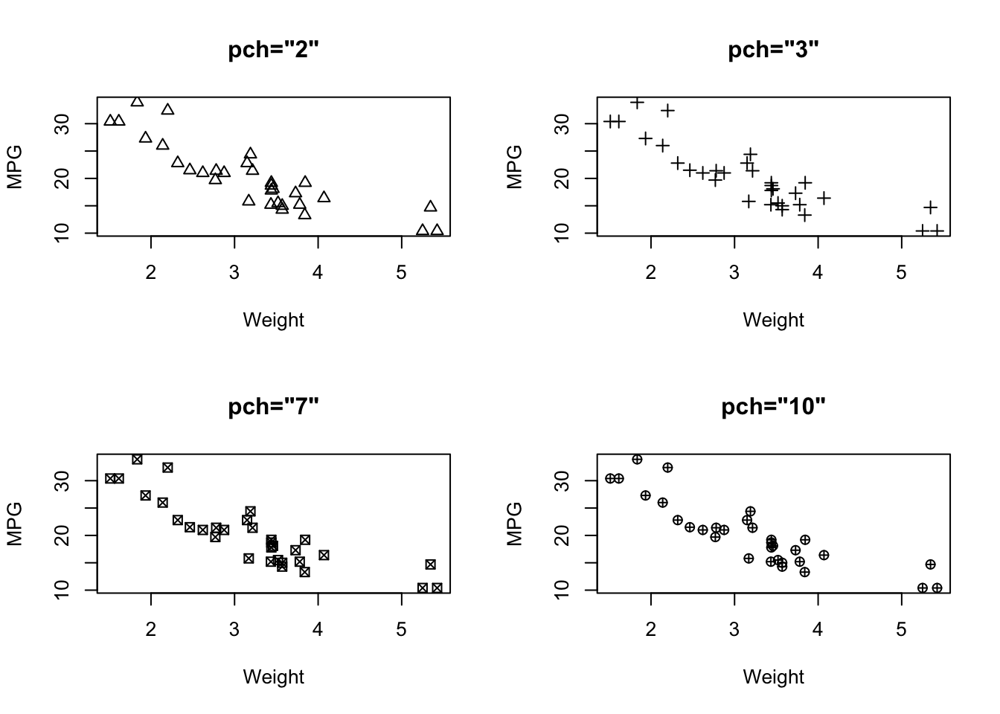
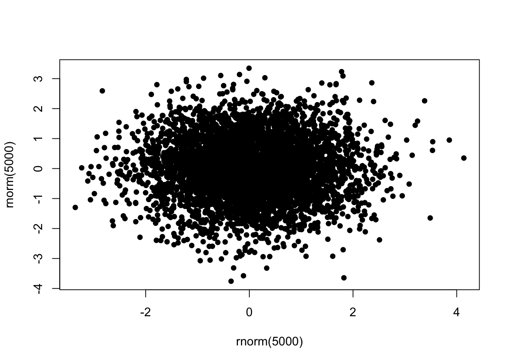
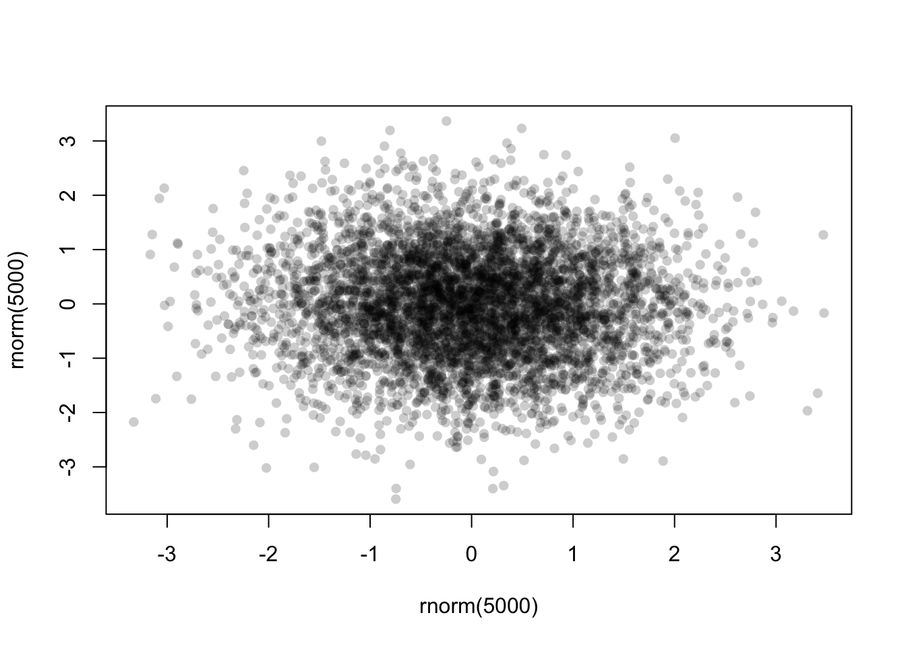
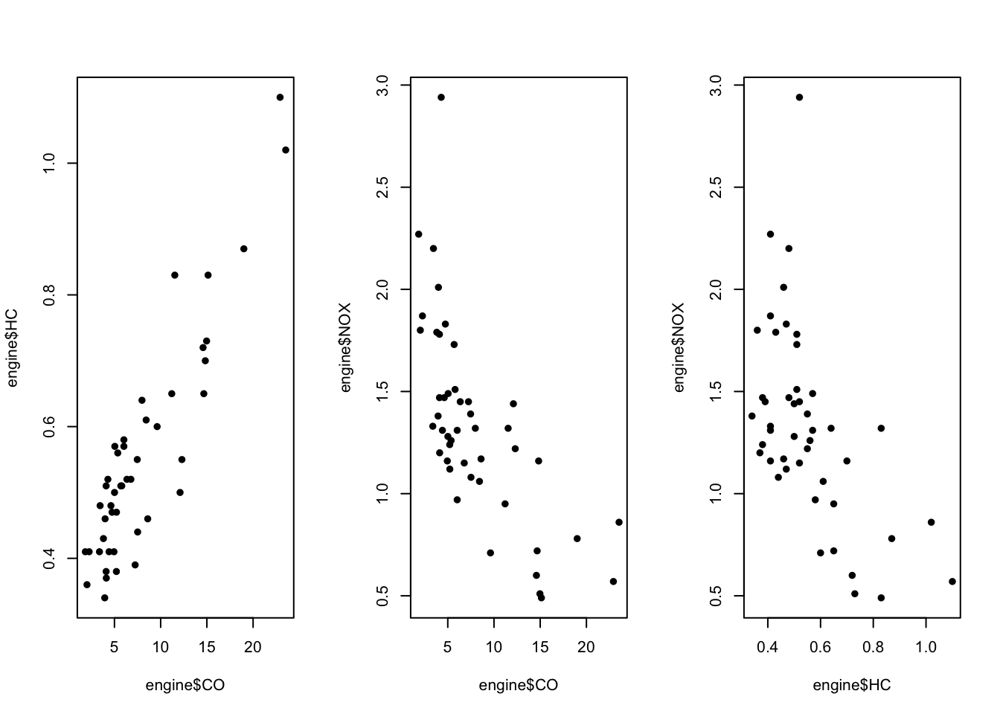
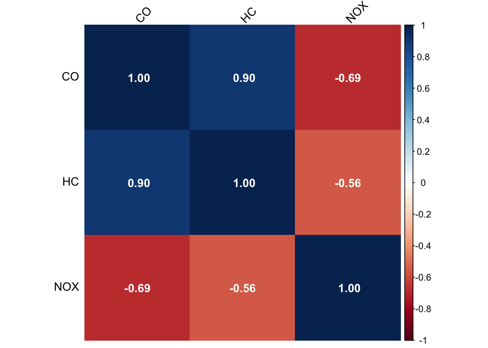
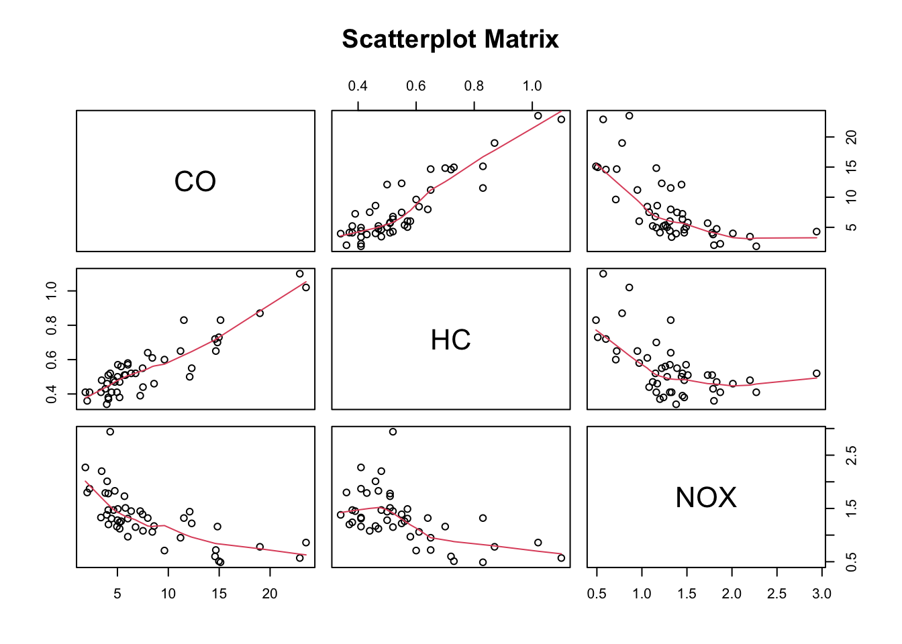
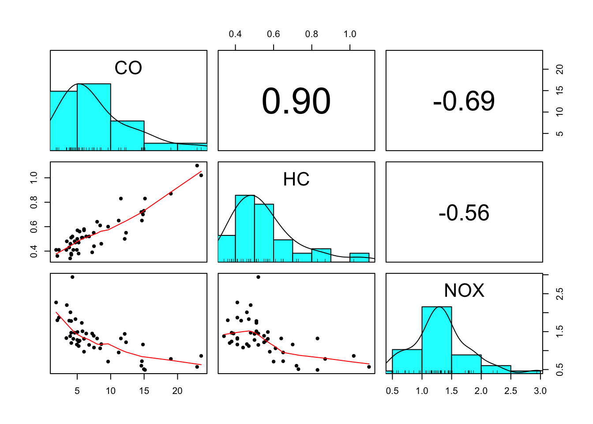
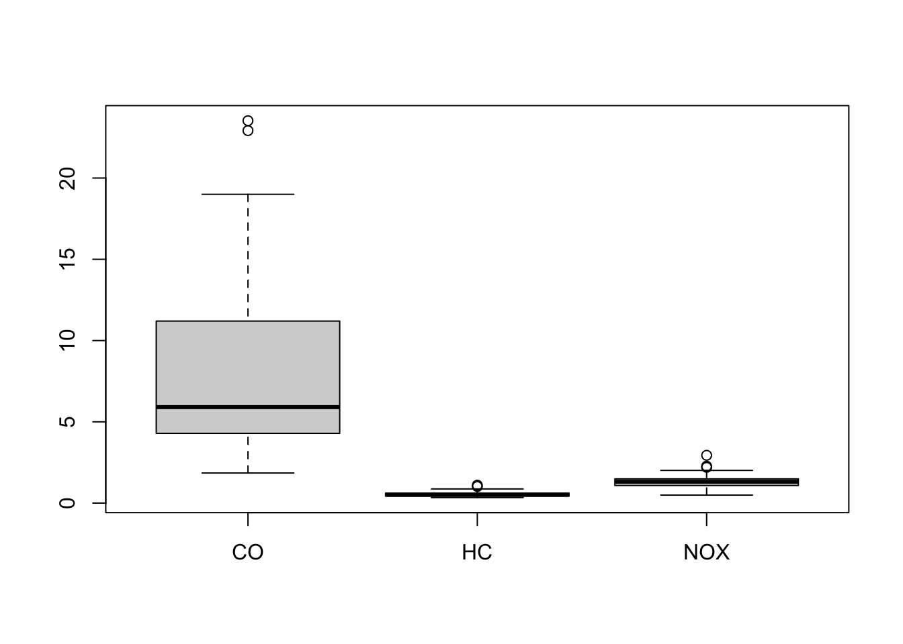
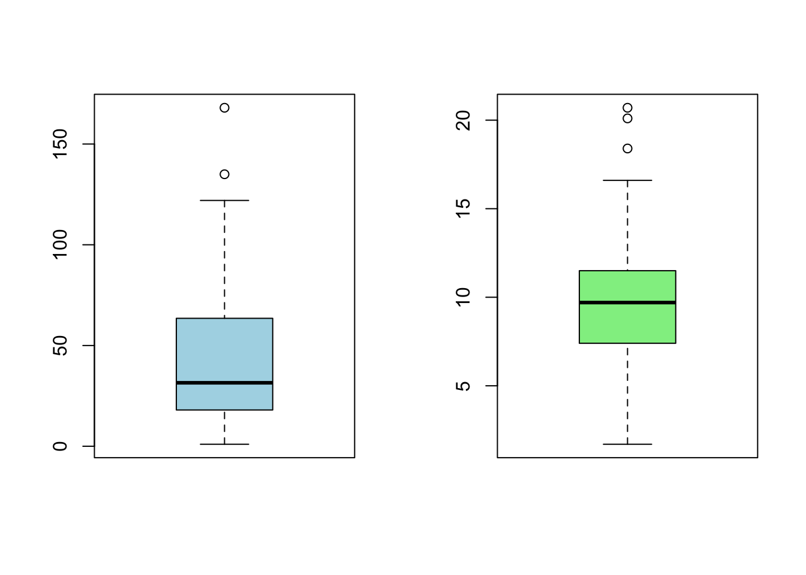
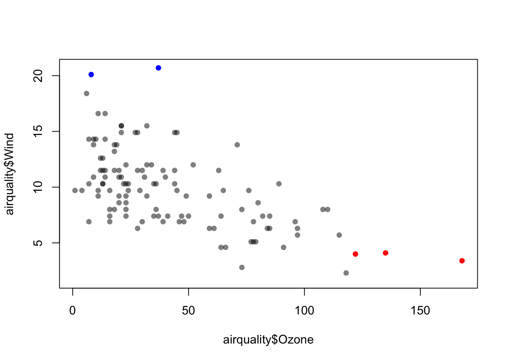

install.packages("scales")Workshop 2 - Dependency, Relationships and Associations
Goals
In this workshop, we will learn how to:
- Draw scatterplots of pairs of continuous variables
- Use transparency in our visualisations
- Assess dependency, relationships and associations
- Visualise correlation through heatmaps and scatterplot matrices
You will need to install the following packages for today’s workshop:
scalesfor thealpha()function for transparency in plotspsychfor making improved version of scatterplot matrices
Custom packages are exceptionally useful in R, as they provide more specialised functionality beyond what is included in the base version of R. We will typically make use of custom packages to access specialised visualisation functions or particular data sets that are included in the package.
There are many ways to install a new package. Here are a few of the easiest:
- In RStudio, open the Tools menu and select
Install Packages.... Type the name of the package, and click install. - In the console, type
install.packages("pkgname")where you replacepkgnamewith the name of the package you want to install. - Note that you can’t install your own packages on the NCC server, a set of advanced packages (including the above) are already installed, so you don’t have to worry about this step in that case.
Using the plot function
Scatterplots are a rather simple plot, but incredibly effective at showing structure in the data. By simply plotting points at the coordinates of two numerical variables, we can easily detect any patterns that may appear.
The plot function produces a scatterplot of its two arguments. For illustration, let us use the mtcars data set again, containing information on the characteristics of 23 cars. We can plot miles per gallon against weight with the command
data(mtcars)
plot(x=mtcars$wt, y=mtcars$mpg)
Unsurprisingly, heavier cars do fewer miles per gallon and are less efficient. The relationship here, while clear and negative, is far from exact with a lot of noise and variation.
If the argument labels x and y are not supplied to plot, R will assume the first argument is x and the second is y. If only one vector of data is supplied, this will be taken as the \(y\) value and will be plotted against the integers 1:length(y), i.e. in the sequence in which they appear in the data.
Customising the plot type
Another useful optional argument is type, which can substantially change how plot draws the data. The type argument can take a number of different values to produce different types of plot:
type="p"- draws a standard scatterplot with a point for every \((x,y)\) pairtype="l"- connects adjacent \((x,y)\) pairs with straight lines, does not draw points. Note this is a lowercase L, not a number 1.type="b"- draws both points and connecting line segmentstype="s"- connects points with ‘steps’ rather than straight lines
par(mfrow=c(2,2))
o <- order(mtcars$wt)
plot(x=mtcars$wt[o], mtcars$mpg[o], xlab="Weight", ylab="MPG", main='type="p"', ty='p')
plot(x=mtcars$wt[o], mtcars$mpg[o], xlab="Weight", ylab="MPG", main='type="l"', ty='l')
plot(x=mtcars$wt[o], mtcars$mpg[o], xlab="Weight", ylab="MPG", main='type="b"', ty='b')
plot(x=mtcars$wt[o], mtcars$mpg[o], xlab="Weight", ylab="MPG", main='type="s"', ty='s')
Plot symbols
The symbols used for points in scatter plots can be changed by specifying a value for the argument pch {#pch} (which stands for plot character). Specifying values for pch works in the same way as col, though pch only accepts integers between 1 and 20 to represent different point types. The default is pch=1 which is a hollow circle. The possible values of pch are shown in the plot below:

par(mfrow=c(2,2))
plot(x=mtcars$wt, mtcars$mpg, xlab="Weight", ylab="MPG", main='pch="2"', pch=2)
plot(x=mtcars$wt, mtcars$mpg, xlab="Weight", ylab="MPG", main='pch="3"', pch=3)
plot(x=mtcars$wt, mtcars$mpg, xlab="Weight", ylab="MPG", main='pch="7"', pch=7)
plot(x=mtcars$wt, mtcars$mpg, xlab="Weight", ylab="MPG", main='pch="10"', pch=10)
Overplotting and transparency
To deal with issues of overplotting - where dense areas of points are drawn ontop of each other - we can use transparency to make the plot symbols. For example, here are 500 points randomly generated from a 2-D normal distribution. Notice how the middle of the plot is a solid lump of black
plot(x=rnorm(5000),y=rnorm(5000),pch=16)
To ‘fix’ this, we can specify a transparent colour in the col argument by using the alpha function from the scales package:
library(scales)
plot(x=rnorm(5000),y=rnorm(5000),pch=16,col=alpha('black',0.2))
The alpha function takes two arguments - a colour first, and then the alpha level itself. This should be a number in \([0,1]\) with smaller values being more transparent. Finding a good value for alpha is usually a case of trial-and-error, but in general it will be smaller than you might first expect!
Now with the transparency we can see a bit more structure in the data, and the darker areas now highlight regions of high data density.
The engine data set
Download data: engine
This rather simple data set contains three numerical variables, each representing different amounts of pollutants emitted by 46 light-duty engines. The pollutants recorded are Carbon monoxide (CO), Hydrocarbons (HC), and Nitrogen oxide (NOX), all recorded as grammes emitted per mile.
Challenge
- Download the
enginedata set and load it into your workspace - Construct three scatterplots to investigate the relationships between every pair of pollutants:
COversusHCCOversusNOXHCversusNOX
- What are the relationships between the amounts of different pollutants emitted by the various engines? In particular, which pollutants are positively associated and which are negatively associated?
Click for solution
par(mfrow=c(1,3))
plot(x=engine$CO, y=engine$HC, pch=16)
plot(x=engine$CO, y=engine$NOX, pch=16)
plot(x=engine$HC, y=engine$NOX, pch=16) 
The correlation between these variables is checked using the cor function.
| CO | HC | NOX | |
|---|---|---|---|
| CO | 1.00 | 0.90 | -0.69 |
| HC | 0.90 | 1.00 | -0.56 |
| NOX | -0.69 | -0.56 | 1.00 |
The following is code to produce a nice correlation matrix
library(corrplot)corrplot 0.95 loadedcor_matrix <- cor(engine)
corrplot(cor_matrix, method = "color", addCoef.col = "white", tl.col = "black", tl.srt = 45)
and a scatterplot matrix can be plotted using the pairs() command.
pairs(engine, panel = panel.smooth, main = "Scatterplot Matrix")
If you want include correlation coefficients in a scatterplot matrix, you might want to look into the pairs.panels command. You need to have the psych package installed for this.
library(psych)
Attaching package: 'psych'The following objects are masked from 'package:scales':
alpha, rescalepairs.panels(engine, scale=TRUE, ellipses=FALSE)
Visualizing outliers
Scatterplots are useful at identifying outliers and other distributional features.
Data points can be outliers in two dimensions without being outliers in the separate dimensions! For example taller people are generally heavier, but a particularly heavy person of average height stands out more.
Scatterplots help you determine which points are outliers and if they are outliers in more than one variable.
The scatterplots suggest maybe one large outlier on NOX, and two on CO.
boxplot(engine)
The boxplots suggests a few outliers at the top end of each scale.
engine[engine$NOX>2.5,] CO HC NOX
39 4.29 0.52 2.94engine[engine$CO>20,] CO HC NOX
34 23.53 1.02 0.86
35 22.92 1.10 0.57engine[engine$HC>1,] CO HC NOX
34 23.53 1.02 0.86
35 22.92 1.10 0.57Outliers are identified as cases 39 (for NOX) and 34, 35 (for CO).
We are now ready to create a vector of colours to assign
colours <- scales::alpha(rep('black', length=46 ),0.5) ## transparent black for all points
colours[39] <- 'red' ## NOX outlier will be solid red
colours[c(34,35)] <- 'blue' ## CO outliers will be solid bluepar(mfrow=c(1,3)) ## redraw plots with new colours
plot(x=engine$CO, y=engine$HC, col=colours, pch=16)
plot(x=engine$CO, y=engine$NOX, col=colours, pch=16)
plot(x=engine$HC, y=engine$NOX, col=colours, pch=16)
## now we can see that the outliers on CO are also the two largest values on HCChallenge
- Type
data(airquality)to load the built-in airquality data set - Produce a boxplot of the variables
OzoneandWind. How many outliers are there? - Check which observations correspond to these outliers and answer the question again: how many outliers? (caution! The variable
Ozonehas some missing data and the code above might need to be modified) - Produce a scatterplot of the two variables where the outliers are highlighted (by colour, as above or in other ways)
Click for solution
data(airquality)
par(mfrow=c(1,2))
boxplot(airquality$Ozone, col = "lightblue")
boxplot(airquality$Wind, col = "lightgreen")
airquality[!is.na(airquality$Ozone) & airquality$Ozone > 120, ] Ozone Solar.R Wind Temp Month Day
62 135 269 4.1 84 7 1
99 122 255 4.0 89 8 7
117 168 238 3.4 81 8 25airquality[airquality$Wind>20,] Ozone Solar.R Wind Temp Month Day
9 8 19 20.1 61 5 9
48 37 284 20.7 72 6 17colours <- scales::alpha(rep('black',length=153),0.5) ## transparent black for all points
colours[c(62, 99, 117)] <- 'red' ## NOX outlier will be solid red
colours[c(9,48)] <- 'blue' ## CO outliers will be solid blueplot(x=airquality$Ozone, y=airquality$Wind, col=colours, pch=16)